RESEARCH
ABOUT
PRESS & OUTREACH
CONTACT
I am an observational astrophysicist studying the formation and evolution
of planetary systems, with a primary focus on debris disks —
dusty, ring-shaped structures orbiting nearby stars, and cosmic cousins of our
Solar System's Kuiper Belt. By imaging these disks at high angular resolution
with ALMA, SMA, and JWST, I study their morphologies and substructures to infer
the presence and properties of the planets that sculpt them, and to understand
how and when planetary systems like our own form and evolve.
My research spans debris disks from their birth stages around young
pre-main sequence stars to their mature forms around main-sequence and
post-main-sequence stars. I also work on protoplanetary disk substructure,
YSO demographics, and millimeter-wavelength stellar activity.
Research Themes
- Debris Disk Morphology & Planet–Disk Interactions:
Fomalhaut, q1 Eri, HD 15115, HD 53143,
κ CrB
- Young Debris Disks & Disk Dispersal:
Lupus Class III survey, NO Lup CO outflow
- Eccentric Debris Disk Theory:
Apocentre/pericentre glows, dust pressure effects
- Protoplanetary Disks & YSO Demographics:
IRAS 23077, ARKS survey, EWOCS
- Stellar Flares at Millimeter Wavelengths:
HD 283572, RADIOHEAD survey
I held a Submillimeter Array (SMA) Postdoctoral Fellowship at the
Center for
Astrophysics Harvard–Smithsonian from 2022–2025, and recently transitioned
to a CfA Prize JC Ryan Fellowship (October 2025). Prior to this, I completed
my PhD at the Institute of Astronomy, University of Cambridge. I am involved in
a number of ongoing international collaborations, including the large ALMA programme
ARKS (see
Cycle 9 projects here), and the Extended Westerlund 1 and 2 Open Clusters Survey
(EWOCS).
If you are a student looking for research opportunities, please feel free to
reach out to me directly. Below I have included highlights of my research over
the course of my career.
RESEARCH HIGHLIGHTS
Debris Disk
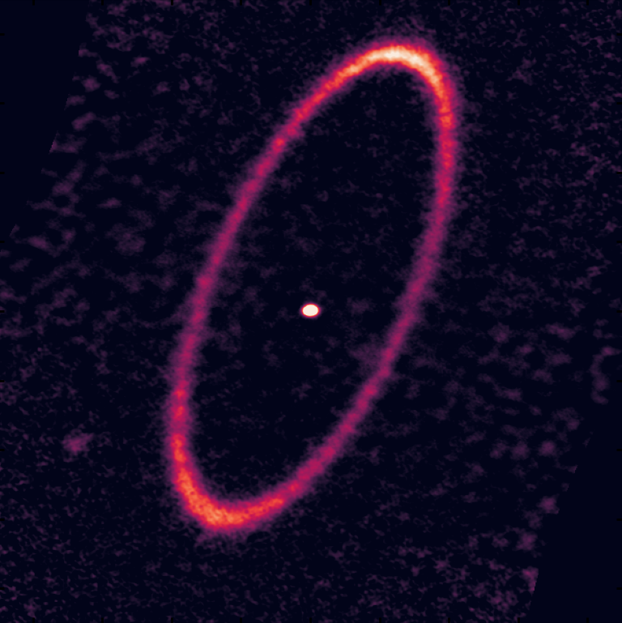
September 2025 — Eccentricity gradient in the Fomalhaut debris disk
My latest paper modelling the iconic Fomalhaut debris disk has been published,
revealing an eccentricity gradient consistent with sculpting by an evolving planetary
system. Image credit: J.B. Lovell & J. Chittidi
Paper here
—
NRAO
press release here
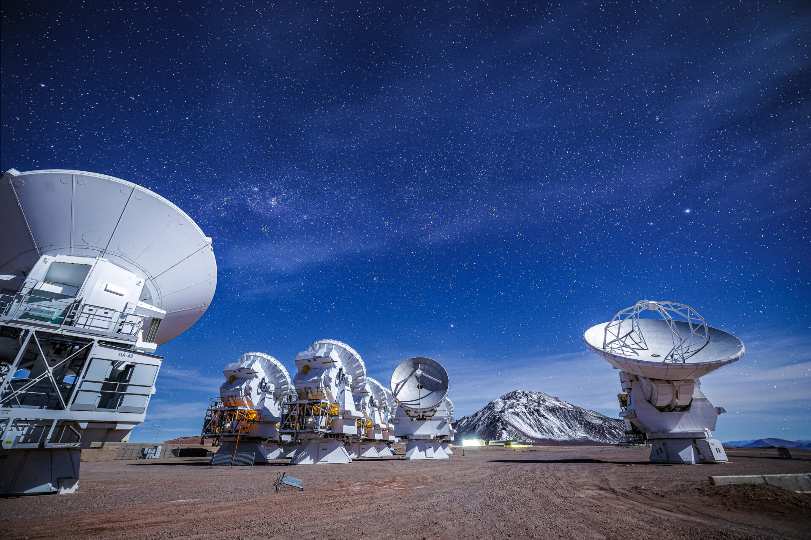
August 2025 — Three approved ALMA projects
Delighted to have three projects approved this ALMA cycle: a YSO survey, a
detailed kinematic study of NO Lup's peculiar belt wind, and a dynamical study
of the Fomalhaut debris disk. Image credit: Alex Pérez, ESO.
Accepted
abstracts here
Protoplanetary Disk
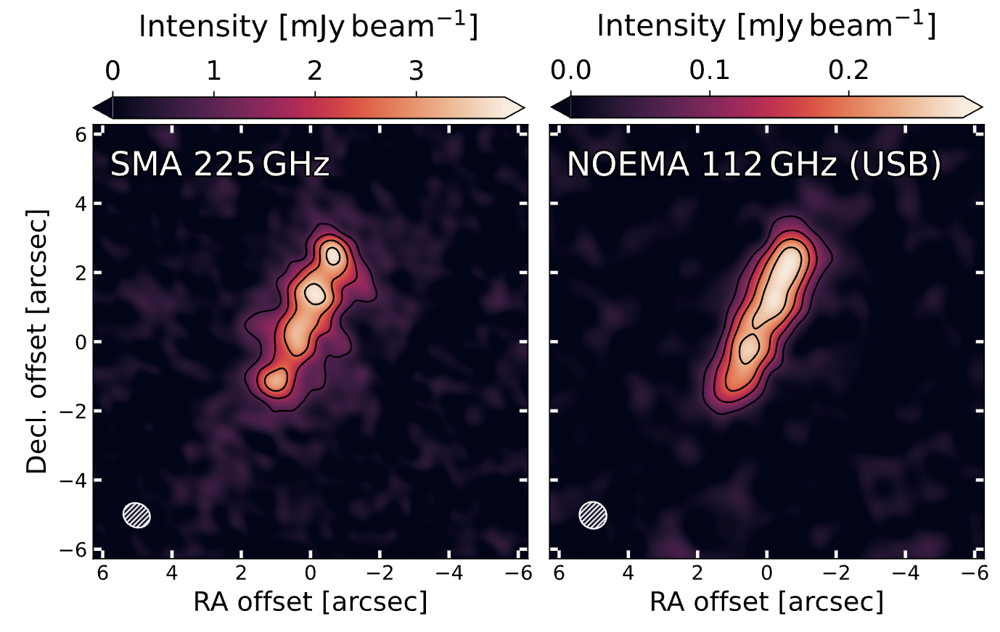
July 2025 — Asymmetry in IRAS 23077+6707 (Dracula's Chivito)
New SMA and NOEMA millimetre data reveal an asymmetry in this enigmatic
edge-on protoplanetary disk. Image: Fig. 1 from paper, edited.
Paper
here
Debris Disk
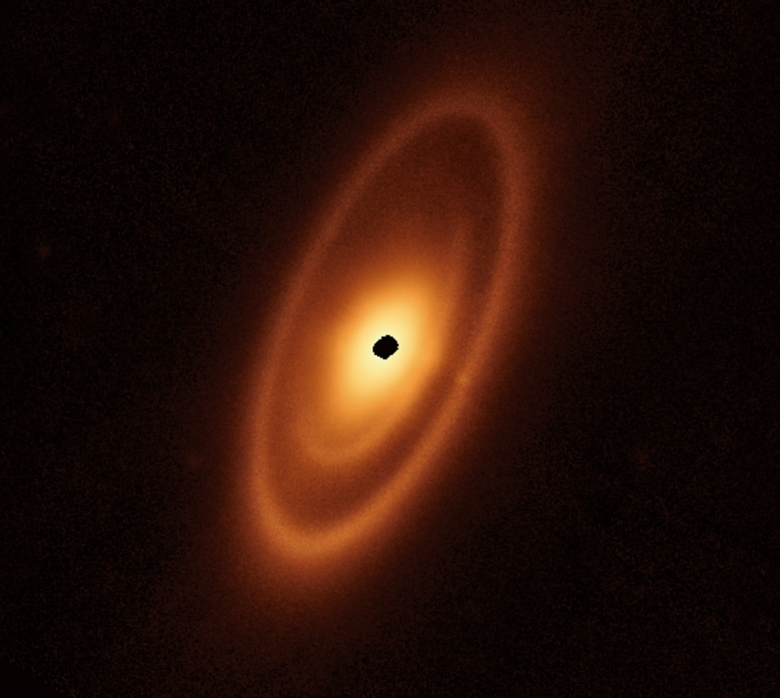
April 2025 — JWST Cycle 4 program approved: eccentric debris disks
My Cycle 4 JWST program to image the eccentric debris disks of HD 15115
and HD 53143 was approved. I will be hiring a student researcher for one year.
Image: JWST MIRI image of Fomalhaut (credit: Gáspár+2023).
Full
proposal details here
Outreach
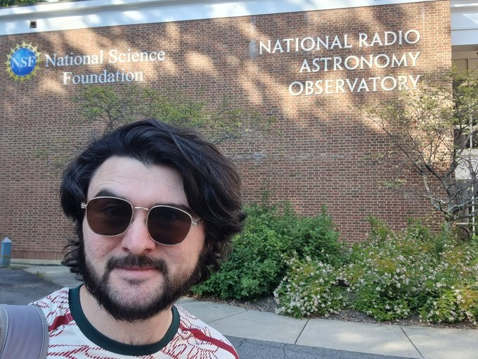
October 2024 — ALMA Ambassador
Selected as a Cycle 12
ALMA
Ambassador. I designed and led a day-long ALMA data calibration and analysis
workshop on October 30th at the CfA. All materials and recordings are
published
here.
Protoplanetary Disk

May 2024 — Largest protoplanetary disk in the sky confirmed
SMA confirmation of IRAS 23077+6707 as the largest protoplanetary disk
in the sky. Credit: Monsch K. & Lovell J. B. et al, 2024
Full
research article here
Stellar Activity

Feb 2024 — SMA detection of an extreme stellar flare
SMA detection of an extreme millimeter flare from the Class III star
HD 283572. Credit: Lovell J. B. et al, 2024
Full
research article here
Debris Disk
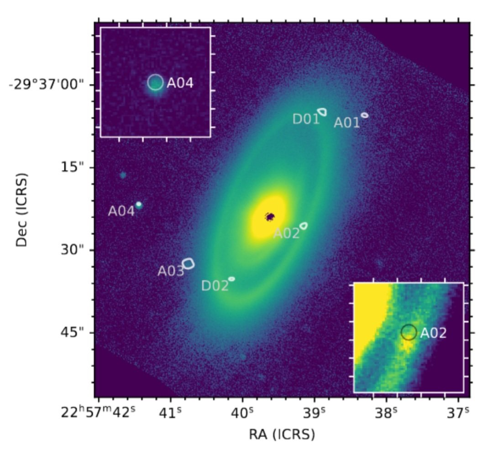
May 2023 — Fomalhaut's Great Dust Cloud is a background object
ALMA and Keck analysis showing that JWST's "Great Dust Cloud" near Fomalhaut
is a background object. Credit: Kennedy G. M. & Lovell J. B.
et al, 2023
Full
research article here
Debris Disk
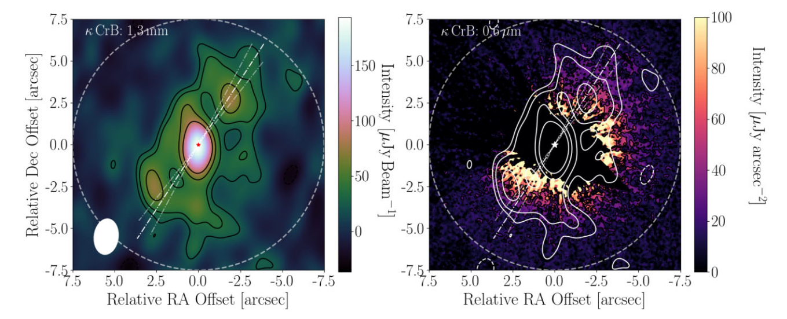
Aug 2022 — Debris disk around κ CrB, a post-main sequence star
ALMA and HST imaging of a broad debris disc around κ CrB, a
sub-giant hosting multiple massive companions. Credit: Lovell J. B.
et al, 2022
Full
research article here
Theory
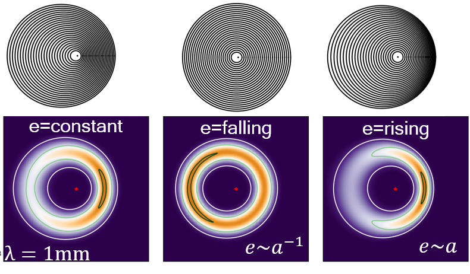
Dec 2021 — Morphology of face-on eccentric debris discs
The origins of apocentre and pericentre glows in face-on eccentric debris
discs. Credit: Lynch & Lovell, 2022
Full
research article here
Debris Disk
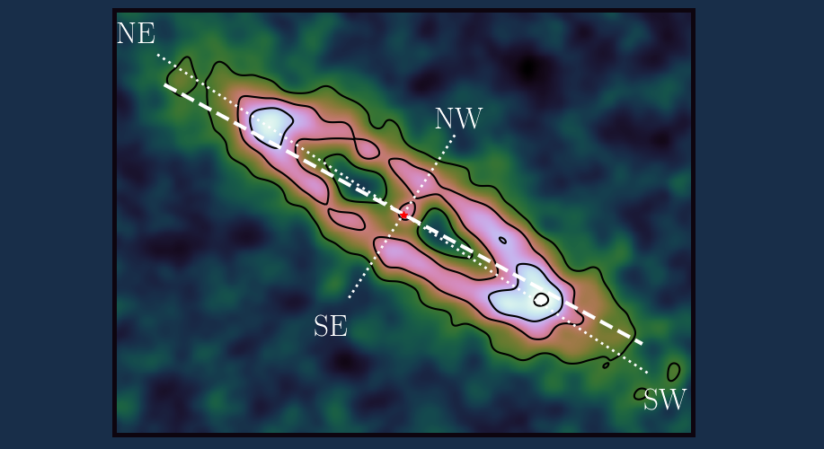
July 2021 — Asymmetric debris disc of q1 Eri
The asymmetric debris disc of q1 Eri, revealed by ALMA.
Credit: Lovell J. B. et al, 2021c
Full
research article here
Outreach
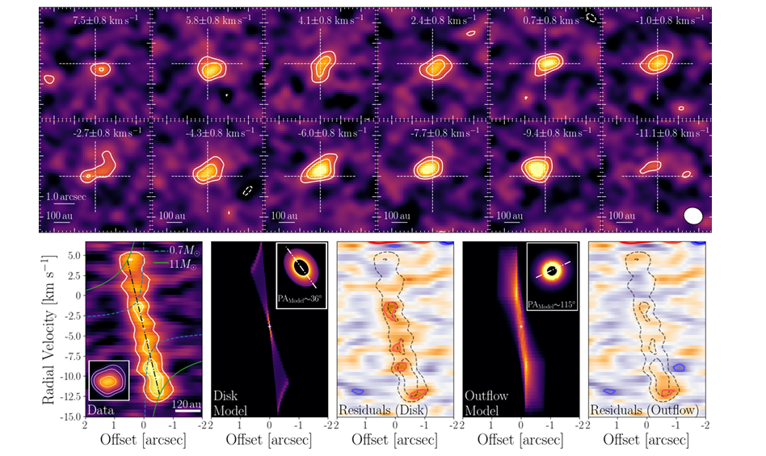
March 2021 — ALMA regional centre featured science highlight
Credit: Lovell J. B. et al, 2021b
Full
article here
Young Disk
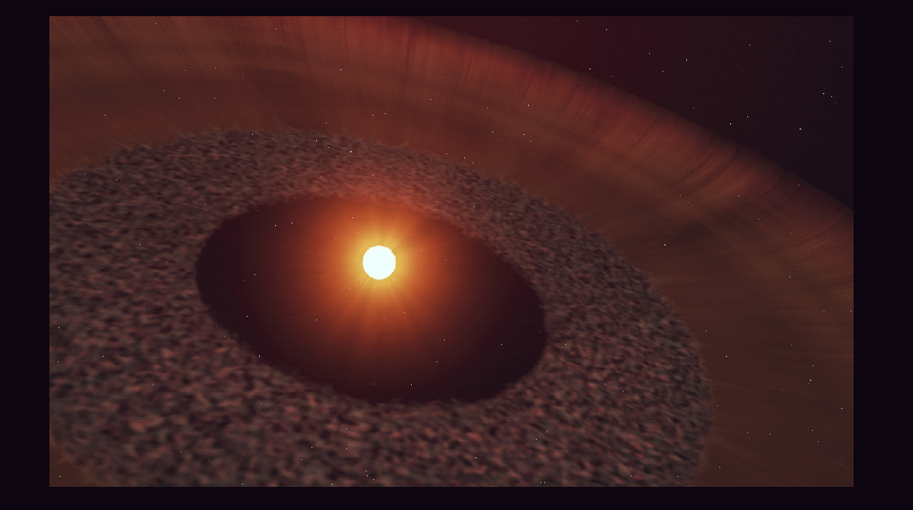
December 2020 — Rapidly outflowing gas from NO Lup
Rapidly outflowing CO gas from Class III star NO Lup, revealed by
ALMA. Credit: Lovell J. B. et al, 2021b
Paper
here —
press
release here —
EarthSky
article here
Young Disk
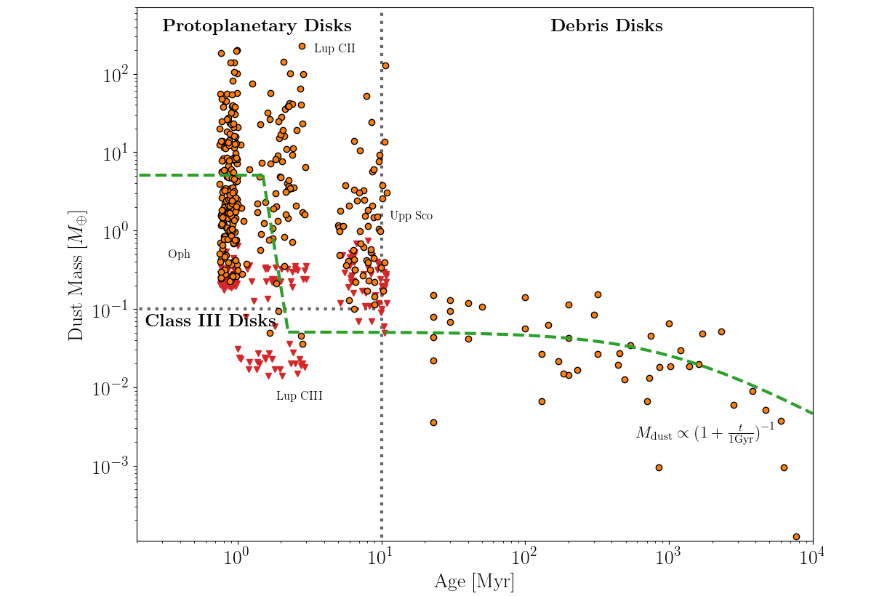
November 2020 — ALMA survey of Lupus Class III stars
Early planetesimal belt formation and rapid disc dispersal in Lupus.
Credit: Lovell J. B. et al. 2021a
Full
research article here

{kind=link}
{kind=link}
{kind=link}
{kind=link}
{kind=link}
{kind=link}
{kind=link}
{kind=link}
{kind=link}
{kind=link}
{kind=link}
{kind=link}